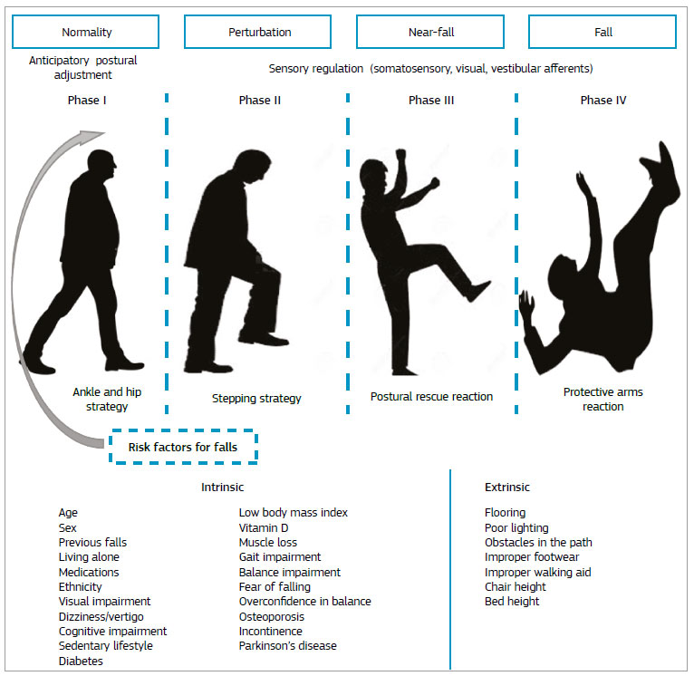

Below are several concrete systems that illustrate how the ideas from the previous pages have been turned into working prototypes or commercial products.
Researchers at the University of Alberta’s Multimedia Research Centre, led by Professor Irene Cheng, collaborated with the company Spxtrm AI to build an autonomous vision system for senior homes and private residences.[2]
This system is one of the earlier clear demonstrations that real-time, privacy-aware fall detection is feasible with deep learning.
More recent academic work focuses on running the entire pipeline on low-cost hardware (Raspberry Pi, Android TV boxes, ordinary smartphones). A typical architecture is:
These designs survive network outages and keep all raw video inside the home. Reported accuracies on public datasets often exceed 95 % while maintaining low false-positive rates when a short “lying still” confirmation window is used.
Several projects place the camera on a smartphone or tablet that the senior already owns. Examples include:
The practical project that accompanies this tutorial follows exactly this philosophy: a laptop or desktop webcam + MediaPipe / modern pose landmarker + simple spine-angle logic + audible alarm.

Some senior living communities have begun installing ambient sensors that monitor gait and posture and can detect both falls and rising fall risk (changes in stride length, slower walking speed). These systems usually display only silhouettes or statistical summaries to staff, again prioritizing privacy.[6]